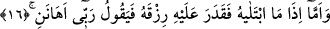

çıkması için en başından ikramın ve nimet vermenin imtihan yoluyla olduğunu bildirmek
maksadıyladır.
16. Onu imtihan edip rızkını daralttığında ise “Rabbim beni önemsemedi” der.
“Onu imtihan edip” yâni Rabbi onu imtihan edip de büyük hikmetlere dayalı irâdesi
gereğince “rızkını daralttığında” ve ona sâdece kendine yetecek kadar verdiğinde,
sâdece bir günlük azık bahşettiğinde ise canı sıkılarak “Rabbim beni önemsemedi”
bana fakirlik vererek beni zelil kıldı “der.” Bütün bunların sabır mı edecek yoksa
sızlanacak mı diye imtihan etmek üzere yapılmış olduğunu ve asla değer vermeme,
önemsememe olmadığını hatırına bile getirmez. Bundan dolayı önceki âyetteki
“ikramda bulunduğunda ve bol nimet verdiğinde” ifâdesine karşılık olarak “değersiz
kılıp da rızkını daralttığında” buyrulmadı. Dahası rızkın daraltılmış olması sabreden
fakir açısından her iki dünyada ikrâma nâil olmaya sebep olabilir. Âhirette ikrâma
götüreceği açıktır. Dünyada ikrâma sebep olmasına gelince fakir olan kimse
düşmanların tamahından kurtulmuş olur. Dünyada büyük ve ileri gelen kimseler onun
hakkında iyi şeyler düşünürler, sabreden fakirin yanına giderek ondan kendilerine duâ
etmesini isterler. Bazen de rızkın genişliği nankörlük yüzünden her iki dünyanın
kaybedilmesine yol açar. Bu durumda ise rızkın bolluğu bir istidrac olmuş olur.
Ey gönül, eğer hakîkat gözüyle bakabilsen
Zenginlik yerine fakirliği seçersin.
Bazı âlimler şöyle derler: Belki de rızık ve geçimin daraltılması; nimetin, kendisini
verenden alıkoymamak/gafil kılmamak sûretiyle fakire bir ikram bile olabilir. Allah’tan
başka bağlanacak bir şeyi olmadığı için bu durumu Hakk’a yönelmeye ve Hakk’ın
yoluna girmeye vesile edinir.
Ebû Hüreyre (r.a.)’tan rivâyete göre o şöyle demiştir: “Ben ashâb-ı suffeden yetmiş
kişi gördüm. Onların arasında üzerinde ridâ/elbise üzerine giyilen hırka ve cübbesi,
gibi giyeceği olan bir tek adam yoktu. Ya vücûdun alt kısmını örten örtüleri ya
boyunlarına bağladıkları bir örtüleri vardı. Bunların da bazılarının örtüsü baldırlarının
yarısına kadar, bazılarınınki topuklarının yarısına kadar ulaşıyordu. Avret mahalleri
görülmesin diye elbiselerini topluyorlardı.”
Şimdi bir düşün, bu durum Allah Teâlâ’nın seçkin kulları açısından onları
önemsememek anlamına mı geliyor? Bir mü’min ya şükür makamında olur ya da sabır
makamında olur. Hz. Peygamber (a.s.): “İman iki yarımdır.Bir yarısı sabır, diğer
yarısı ise şükürdür.” [95] buyurmuştur.